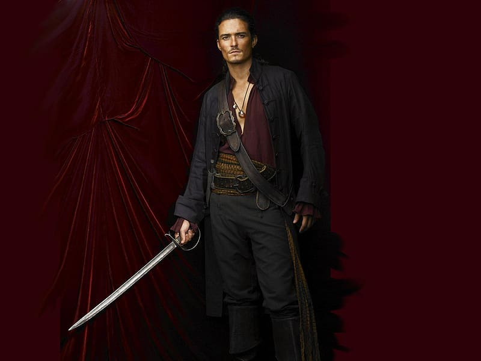
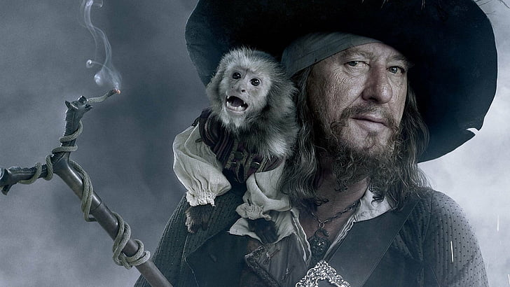
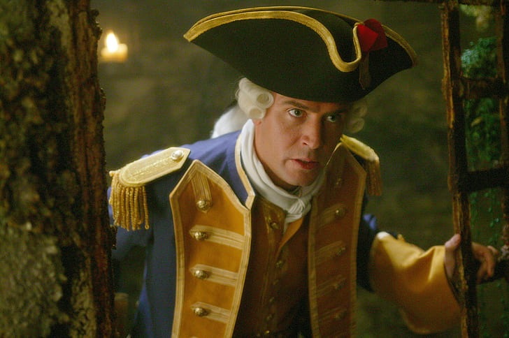
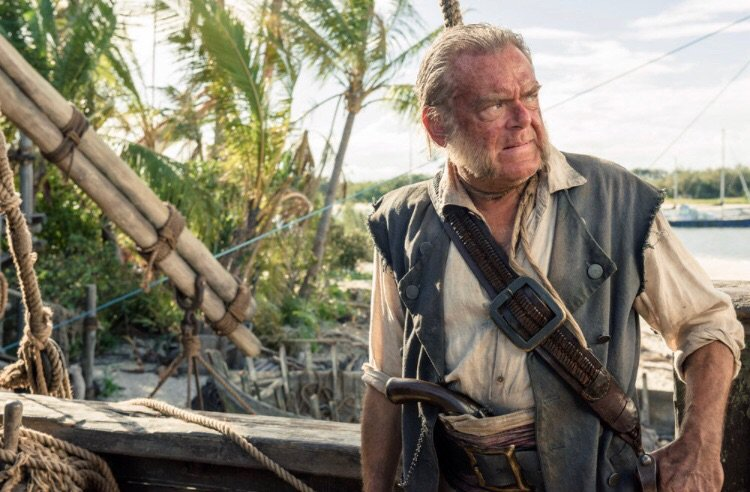
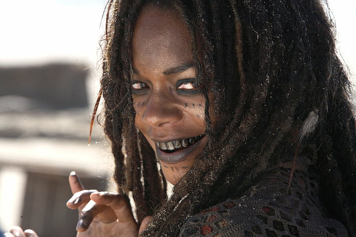
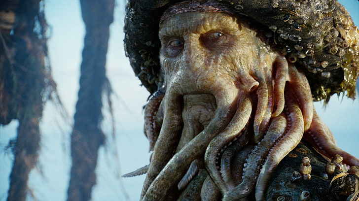

Johnny Depp as Captain Jack Sparrow. Jack Sparrow is the cunning and eccentric pirate captain of the Black Pearl. Known for his witty charm, resourcefulness, and love for freedom, Jack navigates through treacherous adventures while aiming to reclaim his stolen ship. His character is defined by his clever antics, swashbuckling skills, and knack for turning the tide in his favor against formidable foes.
Orlando Bloom as Will Turner. Will Turner is a skilled blacksmith and swordsman who becomes deeply involved in the pirate world. He's driven by his love for Elizabeth Swann and his desire for justice, often finding himself torn between his sense of duty and his personal desires. Will evolves from a humble craftsman into a courageous pirate and ultimately fulfills his destiny as the new captain of the Flying Dutchman, tasked with ferrying souls to the afterlife.

Keira Knightley as Elizabeth Swann. Elizabeth Swann is a central character, known for her bravery, intelligence, and independent spirit. Initially portrayed as a governor's daughter, Elizabeth becomes deeply entwined in the world of piracy through her relationships with Jack Sparrow and Will Turner. Throughout the series, she evolves from a sheltered young woman into a formidable pirate captain, demonstrating resilience and leadership in the face of danger. Her character embodies both strength and compassion, playing a pivotal role in the series' adventures and ultimately becoming a symbol of freedom on the high seas.
Geoffrey Rush as Captain Hector Barbossa. Barbossa is a cunning and ruthless pirate captain, initially introduced as the antagonist. He leads the crew that mutinies against Jack Sparrow, seizing control of the Black Pearl. Throughout the series, Barbossa's character evolves from a villain to an anti-hero, driven by his quest for power and revenge against those who wronged him. Despite his ruthless nature, he displays moments of honor and loyalty, ultimately becoming a complex and compelling figure in the saga of piracy on the high seas.

Jack Davenport as Commodore James Norrington. James Norrington is a prominent character, initially portrayed as a disciplined and honorable officer in the British Royal Navy. He is driven by his duty and pursuit of order, often at odds with the chaotic world of piracy. Throughout the series, Norrington grapples with his principles and desires, ultimately undergoing a transformation from a rigid enforcer of the law to a more morally ambiguous figure. His complex character arc explores themes of loyalty, redemption, and the blurred lines between right and wrong in the pirate-infested Caribbean.

Kevin McNally as Joshamee Gibbs. Joshamee Gibbs, often referred to simply as Gibbs, is a loyal and resourceful member of Jack Sparrow's crew. He serves as Jack's right-hand man and confidant, providing both comic relief and valuable support in their adventures. Gibbs is characterized by his wisdom, wit, and unwavering loyalty to Jack, often offering crucial advice and assistance in navigating the perils of piracy. Throughout the series, he proves himself to be a dependable ally and a beloved member of the crew, embodying the camaraderie and spirit of adventure that define the world of "Pirates of the Caribbean."

Naomie Harris as Tia Dalma (Calypso). Tia Dalma is a mysterious and enigmatic character, known for her mystical powers and deep connection to the supernatural. Initially introduced as a voodoo priestess living in the swamps, Tia Dalma aids Jack Sparrow and his crew in their quests, offering cryptic guidance and assistance. She plays a pivotal role in the series, revealing crucial information about the characters' destinies and the supernatural forces at play. Tia Dalma's character embodies the mystique and magic of the Caribbean, adding depth and intrigue to the fantastical world of pirates and curses.

Bill Nighy as Davy Jones. Davy Jones is a central antagonist, portrayed as the cursed captain of the Flying Dutchman. Once a mortal man who fell in love with the sea goddess Calypso, Davy Jones became the ferryman of souls, tasked with guiding lost souls to the afterlife. However, his heartbreak over Calypso's betrayal turned him bitter, leading him to become a ruthless and vengeful figure. Jones is characterized by his monstrous appearance, with tentacles emerging from his face, and his control over the cursed crew of the Flying Dutchman. Throughout the series, he serves as a formidable adversary to Jack Sparrow and other pirates, embodying the consequences of love, betrayal, and the pursuit of power.

Stellan Skarsgård as William "Bootstrap Bill" Turner. Bootstrap Bill Turner, also known as William "Bootstrap" Turner, is a key character, introduced as the father of Will Turner. He was a crew member aboard the Black Pearl under Captain Jack Sparrow until he was cursed by Davy Jones, transforming him into a part of the ship itself. Bootstrap Bill serves as a tragic figure torn between loyalty to his son and allegiance to Davy Jones. Throughout the series, his character highlights themes of duty, sacrifice, and the consequences of crossing supernatural forces.